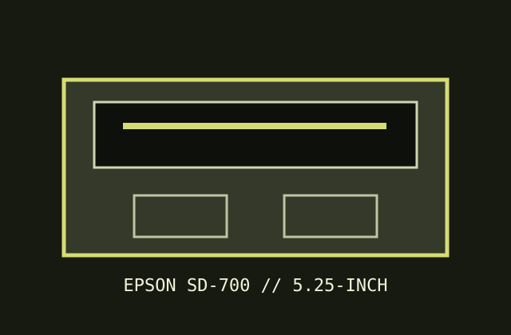

[ IDENTIFIED PC FLOPPY DRIVE ]
Epson SD-700 5.25-inch PC floppy drive
The SD-700 is Epson's 5.25-inch HD mechanism, sometimes paired with an SD-800 3.5-inch drive in a dual-drive chassis. This record covers the 5.25-inch mechanism only.

Documented specifications
| Density / capacity | 5.25-inch, double-sided, 80 tracks/side at 96 TPI; 1.2 MiB formatted HD, 700 KiB DD; unformatted 1.6 MiB HD / 1.0 MiB DD. |
|---|---|
| Interface | PC-compatible 34-pin floppy interface; 4-pin +5 V/+12 V drive power. The dual SD-880/SD-800 chassis uses one PC interface connector for both mechanisms. |
| Data rate / speed | 500 Kib/s HD and 300 Kib/s DD; 360 rpm HD and 300 rpm DD. |
| Jumpers / drive select | SS1 determines which mechanism is presented as A:; SS2-L selects normal/DD vs high-density logic, and SS2-D selects normal-mode spindle speed. Confirm markings and setup for the unit/chassis. |
| Dimensions / power | 41.5 × 148 × 192 mm (H×W×D), approx. 1.1 kg; +5 V and +12 V. Current limits are not specified in the cited setup information; use the original rating label/manual. |
| PC controller compatibility | Epson's SD-880/SD-800 installation information states IBM PC-compatible operation and a standard ISA floppy interface. The SD-700 side works with a PC floppy controller in matching 1.2 MB/360 KB modes. |
Preservation notes
On a dual assembly, identify each drive cable and disconnect the 3.5-inch mechanism before isolated testing when the setup requires it. Record SS1/SS2 settings, do not assume factory DD speed matches the media, and avoid powering the unit with an uncertain cable orientation.
Manuals & archive sources
- Epson SD-800/SD-880 dual floppy installation information and specificationsManufacturer setup document identifies the 5.25-inch SD-700 side, PC interface and drive-select configuration.
- Epson SD-700 technical record — Applesauce floppy archiveCompiled mechanism specifications and SS1/SS2 jumper behavior, with cited source documentation.